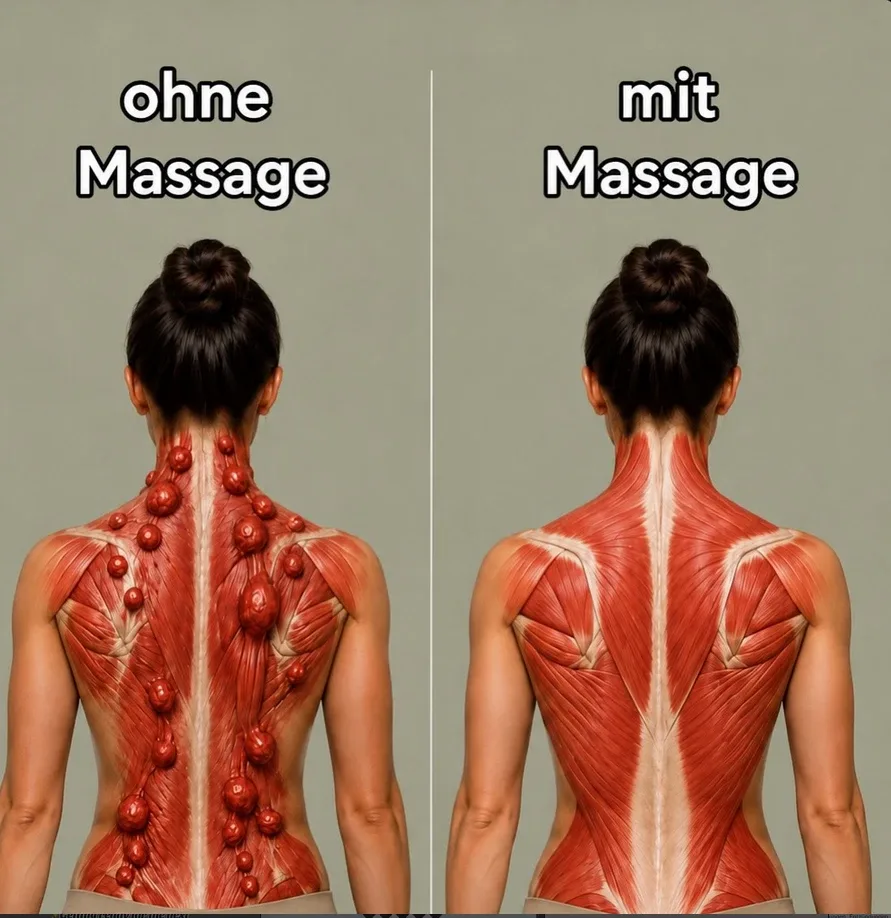
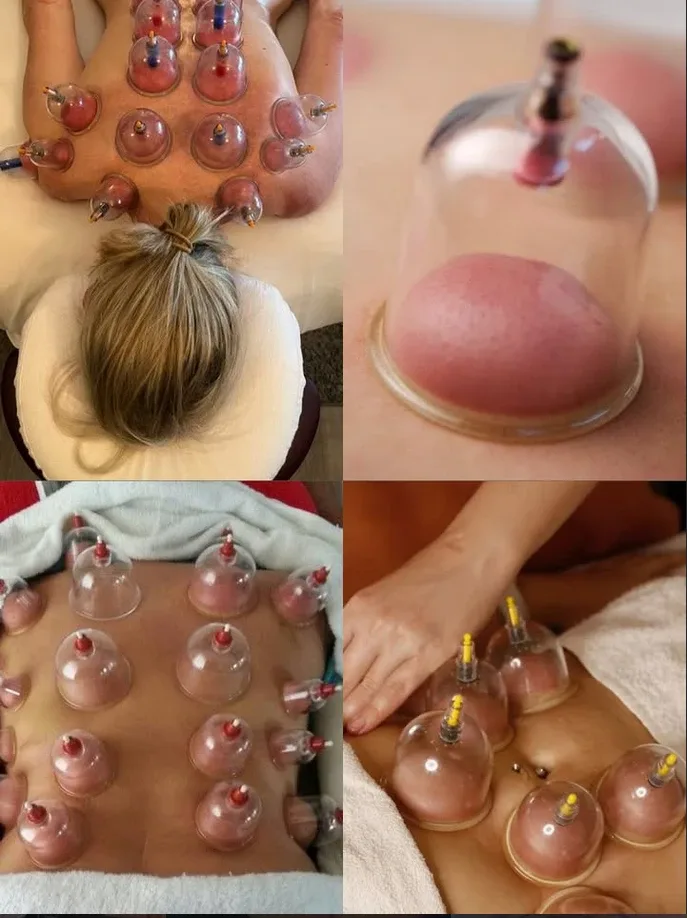
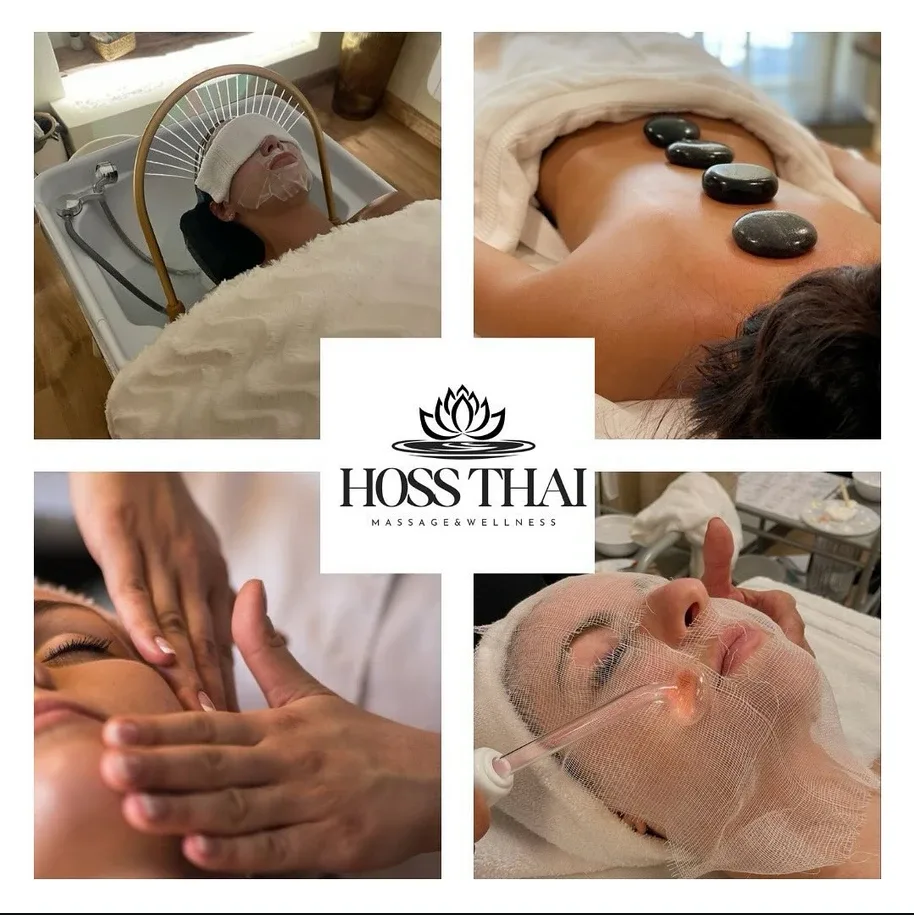
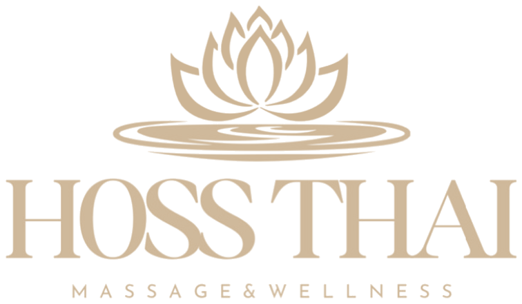

Traditionelle Thai-Massage
Akupressur, Dehnungen und Druck entlang der Energielinien – löst tiefe Verspannungen und macht beweglich.
- 60 Min.auf Anfrage
- 90 Min.auf Anfrage

Traditionelle Thai-Massage & Wellness in Groß-Zimmern
Willkommen bei
Erleben Sie die kunstvolle traditionelle Thai-Massage – eine Behandlung, die tief in der jahrhundertealten Heilkunst Thailands verwurzelt ist.
Durch gezielten Druck auf Energielinien und Akupressurpunkte, sanfte Dehnungen und rhythmische Bewegungen lösen wir Verspannungen und Blockaden, fördern die Durchblutung und schenken Ihnen tiefe Entspannung für Körper und Geist.
Ob klassische Thai-Massage, Schröpfen, Hot Stone, Head Spa oder eine wohltuende Gesichtsbehandlung – bei uns steht Ihr Wohlbefinden im Mittelpunkt.
Entspannung zum Vorteilspreis – fragen Sie nach unseren aktuellen Happy-Hour-Angeboten.
Auf der Suche nach einem Geschenk? Unsere Gutscheine erhalten Sie direkt bei uns im Studio oder telefonisch.
Jetzt anrufenUnser Angebot
Alle Behandlungen sind in verschiedenen Längen buchbar. Gerne beraten wir Sie persönlich.
Akupressur, Dehnungen und Druck entlang der Energielinien – löst tiefe Verspannungen und macht beweglich.
Sanfte, fließende Griffe mit warmem Öl für tiefe Entspannung und neue Energie.
Erwärmte Basaltsteine lockern die Muskulatur und schenken wohlige Wärme bis in die Tiefe.
Schröpfgläser regen Durchblutung und Lymphfluss an – ideal bei hartnäckigen Verspannungen.
Kopfhautreinigung, Massage und Wasserfall-Dusche – eine Auszeit für Kopf und Sinne.
Sanfte Berührungen mit den Fingerspitzen, die Gänsehaut und tiefe Ruhe schenken.
Reinigung, Maske und Hochfrequenz-Pflege für ein frisches, strahlendes Hautbild.
Gemeinsam entspannen – zwei Massagen zur gleichen Zeit im selben Raum.

Traditionelle Thai-Massage
Die traditionelle Thai-Massage wird seit Jahrhunderten zur Entspannung und Regeneration des Körpers eingesetzt. Mit Händen, Daumen, Ellbogen und Knien wird gezielter Druck auf Muskeln, Sehnen und Energielinien ausgeübt, kombiniert mit sanften, passiven Dehnungen.
Verhärtungen und Verspannungen – vor allem in Nacken, Schultern und Rücken – werden spürbar gelöst. Die Durchblutung wird angeregt, der Körper wird beweglicher und Sie fühlen sich nach der Behandlung leicht und voller Energie.
Zu den Behandlungen
Schröpftherapie
Beim Schröpfen werden Gläser mit Unterdruck auf die Haut gesetzt. Das Gewebe wird sanft angehoben, die Durchblutung gefördert und der Lymphfluss angeregt – so können sich tiefe Verspannungen lösen.
Die typischen roten Abdrücke sehen intensiver aus, als die Behandlung sich anfühlt, und verblassen nach einigen Tagen. Viele Gäste berichten danach von einem Gefühl der Leichtigkeit.
Nicht empfohlen bei Herzerkrankungen, Hautproblemen, Blutverdünnung oder in der Schwangerschaft.

Wellness & Beauty
Beim Head Spa verwöhnen wir Kopfhaut und Haar mit Reinigung, Massage und einer beruhigenden Wasserfall-Dusche – eine Wohltat bei Stress und Kopfschmerzen.
Die Hot-Stone-Massage verbindet wohltuende Wärme mit entspannenden Massagegriffen. Unsere Gesichtsbehandlungen reinigen, pflegen und schenken Ihrer Haut neue Frische.
Termin anfragenÜber uns
Mit Fachwissen, Intuition und Herz kümmern wir uns um Ihre Beschwerden – und sorgen dafür, dass Sie sich rundum wohlfühlen.
Inhaber & Masseur
Traditionelle Thai-Massage, Tiefengewebe, Schröpfen. Löst Blockaden gezielt – mit Humor und viel Erfahrung.
Masseurin
Wellness-Massage, Head Spa, Gesichtsbehandlungen. Aufmerksam, einfühlsam und immer mit einem Lächeln.
4,9 ★ bei Google
„Ich habe mich rundum sehr wohlgefühlt! Alles ist absolut sauber und gepflegt, es riecht angenehm frisch, und man merkt sofort, dass hier auf Details geachtet wird.“
Google-Rezension
„Solch eine professionelle, persönliche Behandlung erlebt man wirklich selten.“
Google-Rezension
„Hoss ist ein Profi! Ein Körperproblem-Löser mit Verstand, Intuition, bestem Fachwissen und Humor.“
Google-Rezension
„Sehr angenehme Atmosphäre, professionelle Masseure. Auch Terminvergabe und Ablauf waren unkompliziert und pünktlich.“
Google-Rezension
„Ich war zur einstündigen Wellness-Massage hier – ein Geburtstagsgeschenk – und es war wirklich rundum perfekt.“
Google-Rezension
„Ich kam mit chronischem Schwindel und Kopfschmerzen. Nach 2 Massagen wurden die Symptome deutlich besser.“
Google-Rezension
In der traditionellen asiatischen Gesundheitslehre gilt körperliche und geistige Entspannung als Grundbedürfnis des Menschen. Unsere Massagen können Ihr Wohlbefinden unterstützen, ersetzen jedoch keine ärztliche Behandlung. Bei gesundheitlichen Beschwerden oder laufender ärztlicher Behandlung sprechen Sie eine Wellnessanwendung bitte vorab mit Ihrem Arzt ab.
Kontakt
Vereinbaren Sie Ihren Termin ganz einfach telefonisch oder per Nachricht auf Instagram.
